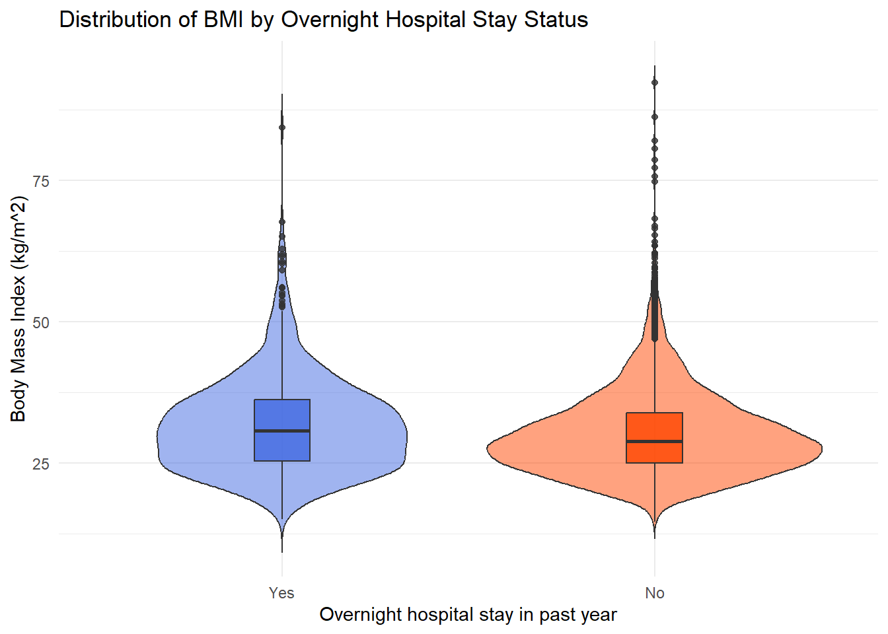
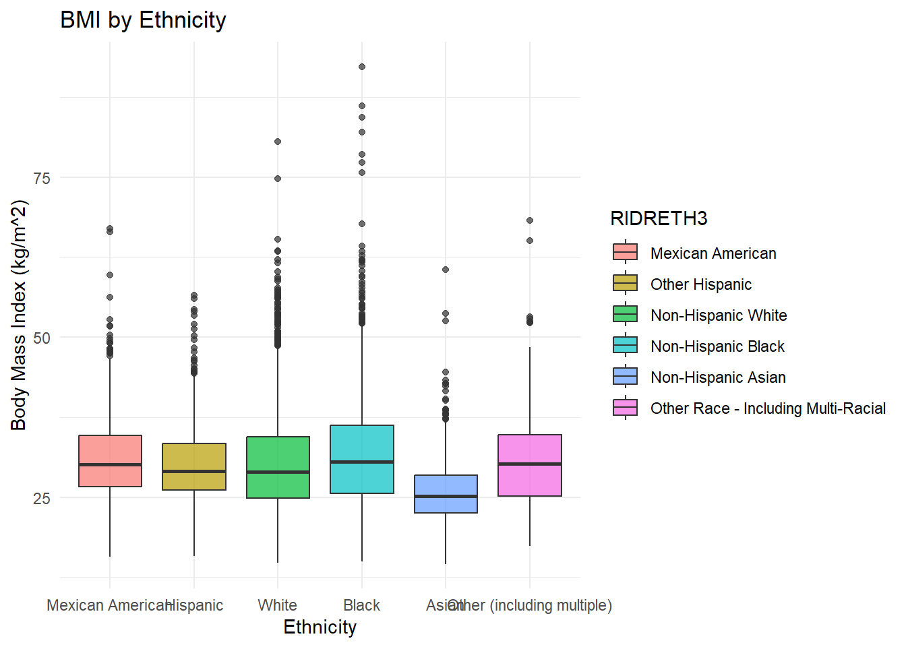
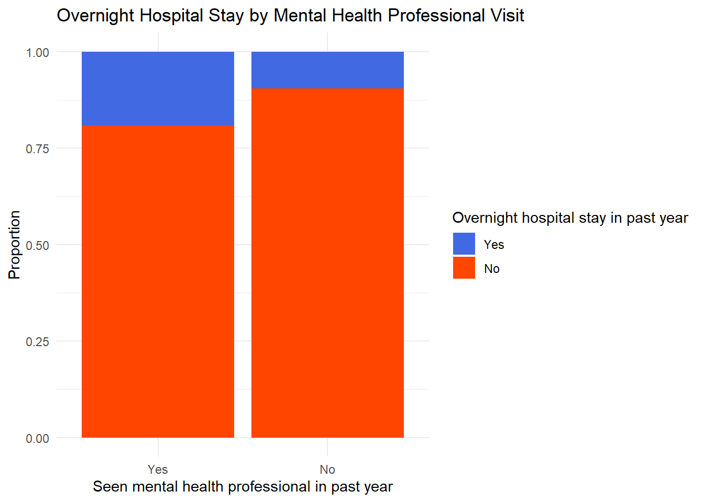

This dashboard was created by modifying the labor delivery template and data and figures created during the analysis. Some of the graphs were modified slightly when they were copied from the analysis into the dashboard to ensure that all the information fit on the page properly. The following sections follow the format outlined in the Study 1 requirements and examine the relationships between general health, BMI, and ethnicity in a sample American adults ages 21 to 79 from NHANES data.
1 Data Import
knitr::opts_chunk$set(comment =NA)library(Hmisc)
Warning: package 'Hmisc' was built under R version 4.5.3
Attaching package: 'Hmisc'
The following objects are masked from 'package:base':
format.pval, units
library(gtsummary)
Warning: package 'gtsummary' was built under R version 4.5.3
library(nhanesA)
Warning: package 'nhanesA' was built under R version 4.5.3
── Conflicts ────────────────────────────────────────── tidyverse_conflicts() ──
✖ dplyr::filter() masks stats::filter()
✖ dplyr::lag() masks stats::lag()
✖ dplyr::src() masks Hmisc::src()
✖ dplyr::summarize() masks Hmisc::summarize()
ℹ Use the conflicted package (<http://conflicted.r-lib.org/>) to force all conflicts to become errors
2 Data Cleaning
body_cleaned <- body_raw %>%select(SEQN, BMXBMI)demo_cleaned <- demo_raw %>%select(SEQN, RIDAGEYR, RIAGENDR, RIDRETH3, DMDEDUC2, INDFMPIR, RIDSTATR)hospital_cleaned <- hospital_raw %>%select(SEQN, HUQ010, HUQ090, HUQ071, HUQ030)# merged all imported data sets# filtered ages to only include 21-79 to ensure count was below 7k maximum# filtered for complete cases, removed Don't know and refused for 3 variables# reassinged more than one to yes for one variablemerged_data <- demo_cleaned %>%left_join(body_cleaned, by ="SEQN") %>%left_join(hospital_cleaned, by ="SEQN") %>%filter(RIDSTATR =="Both interviewed and MEC examined") %>%filter(between(RIDAGEYR, 21, 79)) %>%filter(complete.cases(.)) %>%filter(HUQ071 !="Don't know") %>%filter(!HUQ010 %in%c("Don't know", "Refused")) %>%filter(!HUQ030 %in%c("Don't know", "Refused")) %>%mutate(HUQ030 =fct_recode(HUQ030, "Yes"="There is more than one place")) %>%droplevels()
3 Codebook & Data Description
6665 adults ages 21 to 79 participating in NHANES 2017 to March 2020 pre-pandemic with complete data on the variables listed below.
# A tibble: 6,665 × 7
SEQN BMXBMI HUQ010 HUQ090 HUQ071 HUQ030 RIDRETH3
<dbl> <dbl> <fct> <fct> <fct> <fct> <fct>
1 109266 37.8 Good, No No Yes Non-Hispanic Asian
2 109273 21.9 Good, No No Yes Non-Hispanic White
3 109274 30.2 Good, No No Yes Other Race - Includ…
4 109282 26.6 Fair, or No No Yes Non-Hispanic White
5 109286 28.9 Very good, No No Yes Non-Hispanic Asian
6 109290 28.1 Good, No No Yes Non-Hispanic Black
7 109292 30.5 Very good, No No Yes Other Hispanic
8 109293 30.1 Good, Yes No There is no place Non-Hispanic White
9 109295 24.9 Good, No No Yes Mexican American
10 109298 34.2 Fair, or No No Yes Non-Hispanic White
# ℹ 6,655 more rows
4.1 Do adults with an overnight hospital stay in the last year have a different mean BMI than those without one?
I expect that adults with an overnight hospital stay in the last year will have a different BMI than those who did not because body-mass index is a reliable indicator for general health, and less healthier people seek medical treatment more often.
4.2 Variables Examined
BMXBMI is the variable used to observe BMI. Body-mass index is a simple calculation done to see if people are healthy based on their height and weight. This is the quantitative outcome in this analysis. HUQ071 is the variable used to determine if a survey participant has had an overnight hospital stay in the last year. This is a binary variable with categories Yes and No.
4.3 Analysis
For this analysis there are two independent groups, those who have had an overnight hospital stay in the past year and those who have not. The quantitative outcome is BMI, and the two groups are independent because each participant has only one BMI and belongs to one binary hospitalization group. Because there were several hundred responses in the Yes category and several thousand in the No, a Welch two-sample t test was used to estimate the differences in mean BMI between the two groups. The violin plot was slightly skewed right, but that should not affect the t test given that both groups were sufficiently large and the mean and median of the groups are relatively close (30.7 median Yes; 28.8 median No; 31.7 mean Yes; 30.1 mean No). The t test with a 90% confidence interval was 1.06 to 2.17 (Yes-No) and the p value was far below 0.05, meaning there is evidence that adults who have had an overnight hospital stay in the past year have a higher BMI on average than adults who have not had an overnight hospital stay
# violin plot of overnight hospital stay and bmimerged_data %>%ggplot(aes(x = HUQ071, y = BMXBMI, fill = HUQ071)) +geom_violin(alpha =0.5, trim =FALSE) +geom_boxplot(width =0.15, alpha =0.8) +scale_fill_manual(values =c("No"="orangered", "Yes"="royalblue")) +labs(title ="Distribution of BMI by Overnight Hospital Stay Status", x ="Overnight hospital stay in past year", y ="Body Mass Index (kg/m^2)") +theme_minimal() +theme(legend.position ="none")

# summary stats on bmi grouped by overnight hospital staymerged_data %>%group_by(HUQ071) %>%summarise(n =n(), Mean =mean(BMXBMI), SD =sd(BMXBMI), Median =median(BMXBMI), IQR =IQR(BMXBMI), Minimum =min(BMXBMI), Maximum =max(BMXBMI))
# A tibble: 2 × 8
HUQ071 n Mean SD Median IQR Minimum Maximum
<fct> <int> <dbl> <dbl> <dbl> <dbl> <dbl> <dbl>
1 Yes 706 31.7 8.54 30.7 10.9 15 84.4
2 No 5959 30.1 7.59 28.8 8.8 14.6 92.3
# 2 sample t test to determine difference in population meanst.test(BMXBMI ~ HUQ071, data = merged_data, conf.level =0.90)
Welch Two Sample t-test
data: BMXBMI by HUQ071
t = 4.802, df = 842.4, p-value = 1.858e-06
alternative hypothesis: true difference in means between group Yes and group No is not equal to 0
90 percent confidence interval:
1.060764 2.167902
sample estimates:
mean in group Yes mean in group No
31.71997 30.10564
4.4 Conclusions
Adults who reported an overnight hospital stay in the last year had a higher average BMI than adults who did not. The estimated mean difference in BMI was 1.61 kg/m^2, with a 90% confidence interval from 1.06 to 2.17 kg/m^2. Since this interval excludes 0, the results provide evidence of a difference in population mean BMI between the two groups, which is consistent with my hypothesis.
5 Analysis C
5.1 Does mean BMI differ across ethnic groups?
I expect that there will be a significant difference between the average BMI of each ethnic group because of the physiological differences associated with each group.
5.2 Variables Examined
Once again, BMXBMI is the quantitative variable used to observe body-mass index measured in kg/m^2. RIDRETH3 is the categorical variable for ethnicity that has six possible values: Non-Hispanic Asian, Non-Hispanic White, Non-Hispanic Black, Mexican American, Hispanic, and Other Race - Including Multi-Racial. The quantitative outcome is BMI and each of the ethnicities are the independent categories.
5.3 Analysis
For this analysis there are six independent groups, one for each racial category. Because there are several different categories, ANOVA is required to determine if there is a difference in at least one of the population means and Tukey HSD is used afterwards to determine which groups differ and to what degree. Based on the very small P value of the ANOVA, there is a difference in at least one of the population means, so the Tukey HSD is required. At a 90% confidence interval, Asians had a lower average BMI than all other ethnic categories and Black participants had a higher average BMI than both Hispanic and White participants.
Compared to Mexican American adults, Asians had an estimated mean BMI that was 5.19 kg/m^2 (-6.16 to -4.22 on a 90% CI), and compared to Black adults, Asians had an estimated mean BMI 5.91 kg/m^2 lower (-6.72 to -5.10 on a 90% CI). Black adults had an estimated mean BMI 1.60 kg/m^2 higher than Hispanic adults (0.72 to 2.48 on a 90% CI), and 1.40 kg/m^2 higher than White adults (0.79 to 2.01 on a 90% CI).
merged_data %>%group_by(RIDRETH3) %>%summarise(n =n(), Mean =mean(BMXBMI), SD =sd(BMXBMI), Median =median(BMXBMI), IQR =IQR(BMXBMI), Minimum =min(BMXBMI), Maximum =max(BMXBMI))
# A tibble: 6 × 8
RIDRETH3 n Mean SD Median IQR Minimum Maximum
<fct> <int> <dbl> <dbl> <dbl> <dbl> <dbl> <dbl>
1 Mexican American 766 31.1 6.50 30.1 8 15.7 67
2 Other Hispanic 674 30.2 6.36 29.1 7.27 15.8 56.6
3 Non-Hispanic White 2254 30.4 7.74 29 9.5 14.8 80.6
4 Non-Hispanic Black 1803 31.8 8.89 30.6 10.6 15 92.3
5 Non-Hispanic Asian 836 25.9 4.77 25.2 5.8 14.6 60.6
6 Other Race - Including Multi-R… 332 30.8 7.76 30.2 9.55 17.4 68.2
# summary stats on bmi grouped by ethnicitymerged_data |>ggplot(aes(x = RIDRETH3, y = BMXBMI, fill = RIDRETH3)) +geom_boxplot(alpha =0.7) +scale_x_discrete(labels =c("Other Hispanic"="Hispanic","Non-Hispanic White"="White","Non-Hispanic Black"="Black","Non-Hispanic Asian"="Asian","Other Race - Including Multi-Racial"="Other (including multiple)" ))+labs(title ="BMI by Ethnicity", x ="Ethnicity", y ="Body Mass Index (kg/m^2)") +theme_minimal()

# ANOVA to determine is Tukey HSD is neededanova_C <-aov(BMXBMI ~ RIDRETH3, data = merged_data)summary(anova_C)
Df Sum Sq Mean Sq F value Pr(>F)
RIDRETH3 5 20850 4170 73.87 <2e-16 ***
Residuals 6659 375909 56
---
Signif. codes: 0 '***' 0.001 '**' 0.01 '*' 0.05 '.' 0.1 ' ' 1
# Tukey HSD to determine difference between mean BMI compared by ethnicityTukeyHSD(anova_C, conf.level =0.90)
Tukey multiple comparisons of means
90% family-wise confidence level
Fit: aov(formula = BMXBMI ~ RIDRETH3, data = merged_data)
$RIDRETH3
diff lwr
Other Hispanic-Mexican American -0.8656604 -1.8930245
Non-Hispanic White-Mexican American -0.6859362 -1.4995150
Non-Hispanic Black-Mexican American 0.7240000 -0.1149909
Non-Hispanic Asian-Mexican American -5.1793003 -6.1522742
Other Race - Including Multi-Racial-Mexican American -0.2291288 -1.5073476
Non-Hispanic White-Other Hispanic 0.1797241 -0.6742920
Non-Hispanic Black-Other Hispanic 1.5896604 0.7114013
Non-Hispanic Asian-Other Hispanic -4.3136399 -5.3206710
Other Race - Including Multi-Racial-Other Hispanic 0.6365316 -0.6677984
Non-Hispanic Black-Non-Hispanic White 1.4099363 0.7953043
Non-Hispanic Asian-Non-Hispanic White -4.4933641 -5.2811108
Other Race - Including Multi-Racial-Non-Hispanic White 0.4568074 -0.6867441
Non-Hispanic Asian-Non-Hispanic Black -5.9033003 -6.7172661
Other Race - Including Multi-Racial-Non-Hispanic Black -0.9531288 -2.1148971
Other Race - Including Multi-Racial-Non-Hispanic Asian 4.9501715 3.6882373
upr p adj
Other Hispanic-Mexican American 0.1617037 0.2464268
Non-Hispanic White-Mexican American 0.1276425 0.2458015
Non-Hispanic Black-Mexican American 1.5629910 0.2221125
Non-Hispanic Asian-Mexican American -4.2063264 0.0000000
Other Race - Including Multi-Racial-Mexican American 1.0490901 0.9973211
Non-Hispanic White-Other Hispanic 1.0337403 0.9942858
Non-Hispanic Black-Other Hispanic 2.4679195 0.0000417
Non-Hispanic Asian-Other Hispanic -3.3066089 0.0000000
Other Race - Including Multi-Racial-Other Hispanic 1.9408615 0.8049080
Non-Hispanic Black-Non-Hispanic White 2.0245682 0.0000000
Non-Hispanic Asian-Non-Hispanic White -3.7056173 0.0000000
Other Race - Including Multi-Racial-Non-Hispanic White 1.6003590 0.9064789
Non-Hispanic Asian-Non-Hispanic Black -5.0893345 0.0000000
Other Race - Including Multi-Racial-Non-Hispanic Black 0.2086394 0.2747953
Other Race - Including Multi-Racial-Non-Hispanic Asian 6.2121057 0.0000000
5.4 Conclusion
Based on the results of the Tukey HSD test, population mean BMI does differ among adults across ethnic groups. The strongest pattern was that Asian participants had a much lower mean BMI than both Mexican American and Black Adults. Additionally, Black adults had a higher mean BMI than both White and Hispanic adults. This supports my hypothesis that population mean BMI differs between ethnicities.
6 Analysis D
6.1 Is visiting a mental health professional in the last year associated with an overnight hospital visit in the past year?
Based on the assumption that people who seek mental health treatment are unhealthy and unhealthy people go to the hospital more than healthy people, I believe there will be an association between people visiting a mental health professional and having an overnight hospital stay both within the past year.
6.2 Variables Explained
Both HUQ071, have you had an overnight hospital visit in the last year, and HUQ090, have you seen a mental health professional in the last year, are binary variables. By building a 2 x 2 table, we can assess both risk difference and relative risk associated and determine the association of the two observed variables.
6.3 Analysis
The risk table shows that there is a relative risk of 2.02, meaning adults who saw a mental health professional in the last year were over twice as likely to have been hospitalized overnight within the same time frame, and an odds ratio of 2.27, meaning that those who had been hospitalized within the past year were also twice as likely to have seen a mental health professional in the past year. The risk difference is around 0.098, meaning the risk of overnight hospitalization for adults who saw a mental health professional was 9.8% higher than those who did not. Additionally, the risk associated with seeing a mental health professional was much higher than the risk associated with being hospitalized, 19.3% versus 6.9%
# building tablerisk_table <-table(MentalHealthProfessional = merged_data$HUQ090,OvernightHospital = merged_data$HUQ071)# assigning each cell in table variable to calculate risk diff, relative risk, and odds ratioa <- risk_table["Yes", "Yes"]b <- risk_table["Yes", "No"]c <- risk_table["No", "Yes"]d <- risk_table["No", "No"]risk_yes <- a / (a + b)risk_no <- c / (c + d)risk_difference <- risk_yes - risk_norelative_risk <- risk_yes / risk_noodds_ratio <- (a * d) / (b * c)risk_yes
[1] 0.1918768
risk_no
[1] 0.09561418
risk_difference
[1] 0.09626257
relative_risk
[1] 2.006781
odds_ratio
[1] 2.245826
risk_table
OvernightHospital
MentalHealthProfessional Yes No
Yes 137 577
No 569 5382
# bar graph of Overnight Hospital Stay by Mental Health Professional Visitggplot(merged_data, aes(x = HUQ090, fill = HUQ071)) +geom_bar(position ="fill") +scale_fill_manual(values =c("No"="orangered", "Yes"="royalblue")) +labs(title ="Overnight Hospital Stay by Mental Health Professional Visit",x ="Seen mental health professional in past year",y ="Proportion",fill ="Overnight hospital stay in past year" ) +theme_minimal()

6.4 Conclusions
The results indicate a strong positive association between overnight hospital visits and seeing a mental health professional within the last year. Adults who saw a mental heath professional had a much higher risk of being hospitalized than adults who did not. The hypothesis that there would be an association between visiting a mental health professional and having an overnight hospital stay both within the past year was correct based on the risk analyses.
7 Analysis E
7.1 Is self-reported overall health associated with having a rountine place for healthcare?
Based on the assumption that healthy people remain healthy because they see a healthcare professional, I believe that there will be an association between people reporting higher health and having a routine place for healthcare.
7.2 Variables Explained
HUQ010 is a self-reported overall health rating that includes Excellent, Very good, Good, Fair, or Poor. HUQ030 asks if the participant has a routine place to go for healthcare with possible responses yes and no. The first variable is categorical and the second is binary, meaning a 2 by 5 J x K table can be used to determine association between the two.
7.3 Analysis
This analysis examined the association between self-reported overall health and whether respondents had a routine place to go for healthcare. The associated chi-square test indicated evidence of an association between the two variables with a p value of 0.0004484.
# bar graph of Routine Place for Healthcare by Overall Health Ratingggplot(merged_data, aes(x = HUQ030, fill = HUQ010)) +geom_bar(position ="fill") +scale_fill_discrete(labels =c("Excellent,"="Excellent","Very good,"="Very Good","Good,"="Good","Fair, or"="Fair","Poor?"="Poor")) +scale_y_continuous(labels = scales::percent_format()) +scale_x_discrete(label =c("There is no place"="No")) +labs(title ="Routine Place for Healthcare by Overall Health Rating",x ="Routine Place for Healthcare",y ="Proportion",fill ="Overall Health Rating" ) +theme_minimal()
Excellent, Very good, Good, Fair, or Poor?
Yes 621.6968 1517.2065 2078.1484 1126.8774 203.07097
There is no place 125.3032 305.7935 418.8516 227.1226 40.92903
7.4 Conclusions
The results provide evidence that self-reported overall health is associated with whether adult participants have a routine place to go for healthcare. The relationship is not incredibly strong, but the distribution of health ratings differs enough across the two groups to reject independence.